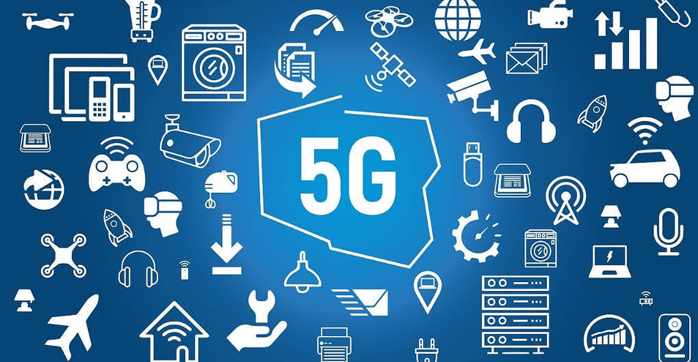

La tecnología 5G marcará el inicio de una nueva era de mayor rendimiento y velocidad de red y, además, generará nuevas experiencias conectadas para los usuarios. En el sector de servicios de salud, la tecnología 5G y la conectividad Wi-Fi 6 permitirán que los pacientes se monitoreen a través de dispositivos conectados que generarán, de forma constante, datos sobre indicadores clave para la salud, como el ritmo cardíaco y la presión arterial. En el sector automotriz, la tecnología 5G en combinación con los algoritmos impulsados por ML ofrecerá información sobre tráfico, accidentes, etc. Los vehículos podrán compartir información entre sí y con entidades sobre las carreteras, como los semáforos. Estas son solo dos aplicaciones en la industria de la tecnología 5G que pueden ofrecer experiencias mejores y más seguras a los usuarios.
